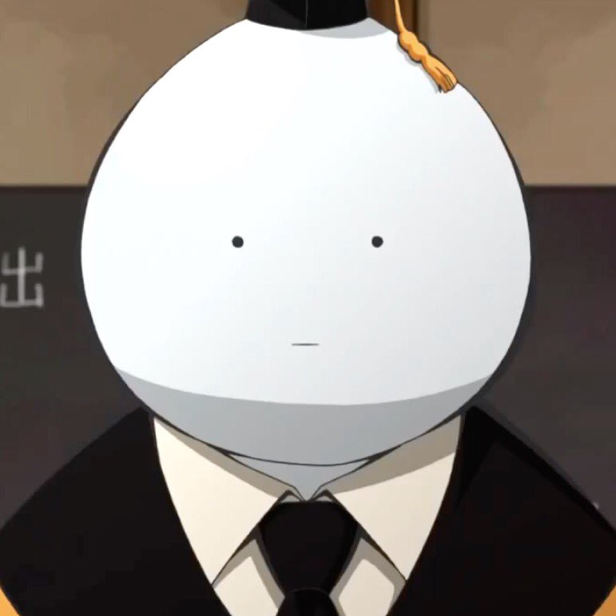
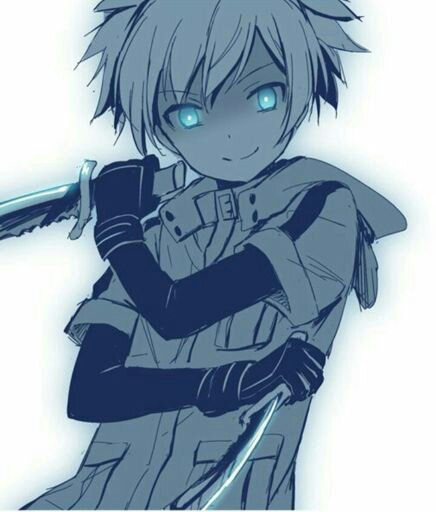
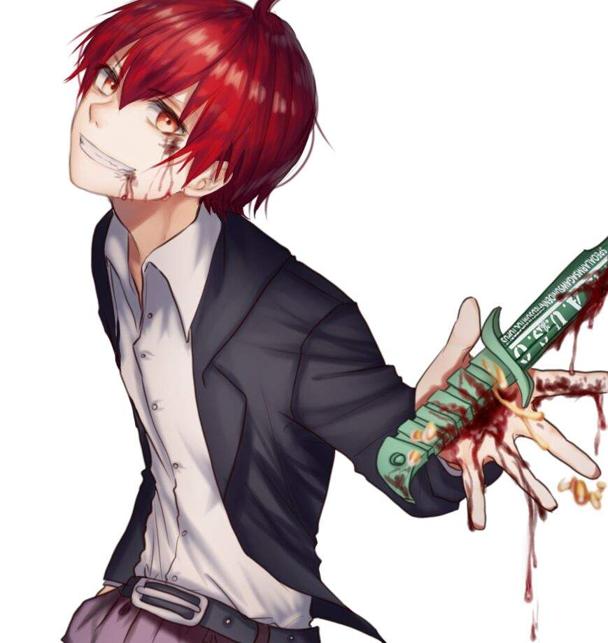
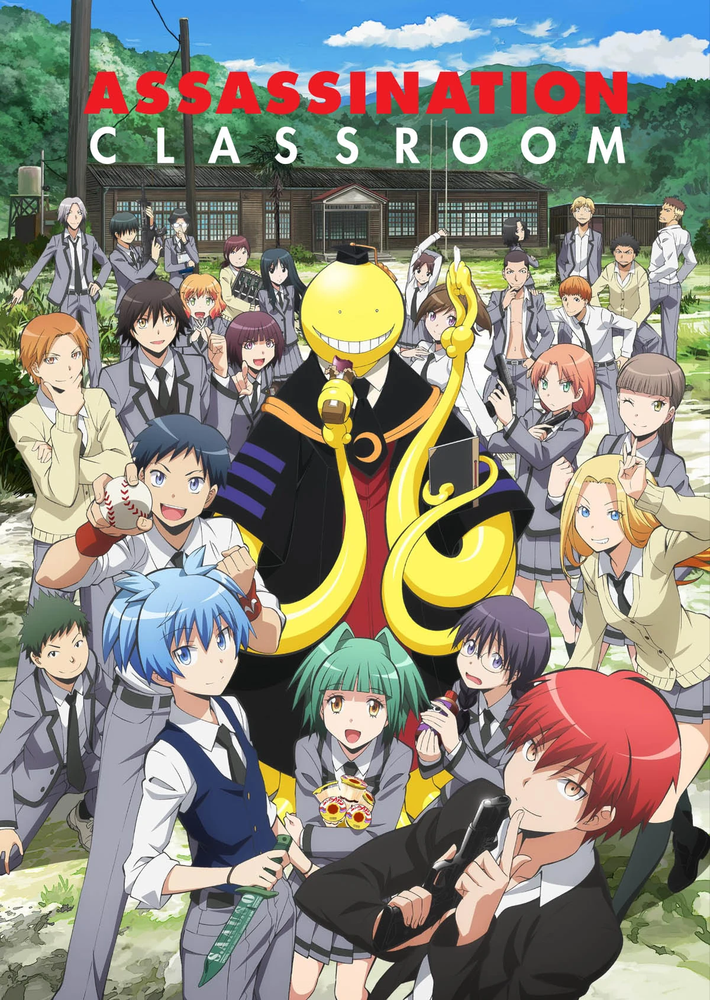
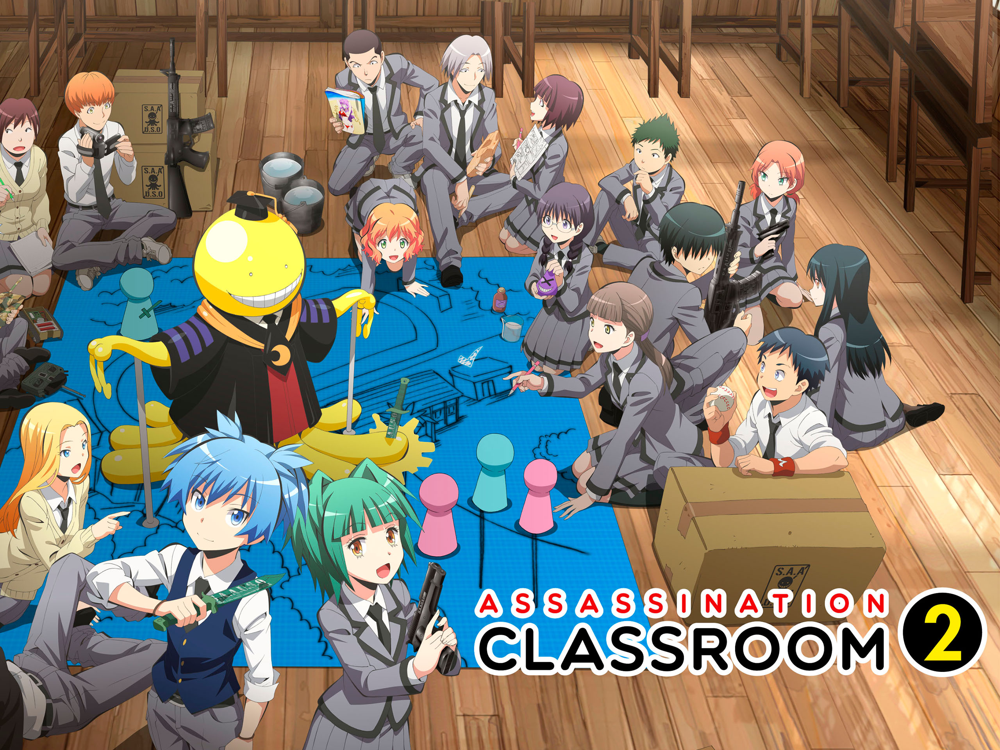
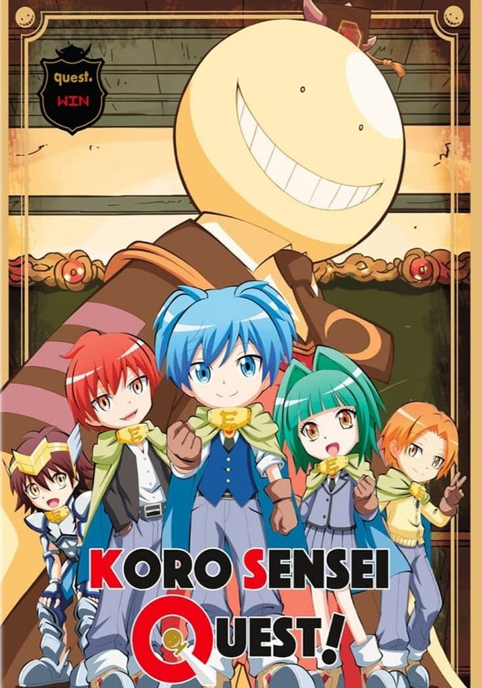
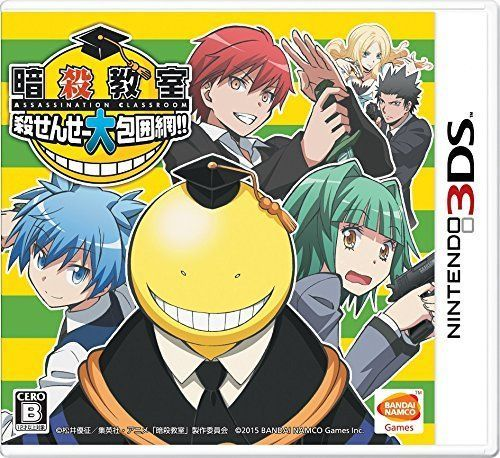

Nombre de la serie: Assassination Classroom (Ansatsu Kyōshitsu). Fecha de estreno: 9 de enero de 2015 País de origen: Japón. Géneros: Acción, ciencia ficción, comedia dramática Nombre del Creador: Yūsei Matsui La serie está protagonizada por la clase 3-E, clase en la que se encuentran los alumnos con las peores calificaciones del instituto, los cuales al inicio de su último semestre se les informa que tendrá la tarea de tratar de asesinar a su nuevo maestro y que en caso de no poder hacerlo él destruirá el mundo.
| Personaje | Imagen | Descripcion |
|---|---|---|
| Koro-sensei |  | Actual maestro de la clase 3-E, y personaje que destruira el mundo si sus alumnos no lo consiguen matar antes de que termine el semestre. |
| Nagisa Shiota |  | Es uno de los peores almnos de la clase 3-E, por el otro lado es el que tiene mejores cualidades como asesino. |
| Karma Akabane |  | Es el mejor estudiente de la clase 3-E tanto fisica como academicamente. |
La primera temporada cuenta con 22 episodios así como con un episodio piloto.
La segunda temporada cuenta con 25 episodios.
Koro-sensei Quest es una serie spin-off que cuenta con 8 episodios.
El juego Ansatsu Kyōshitsu: Koro-sensei Dai Hōimō fue lanzado el 12 de marzo de 2015 en Japon para la consola Nintendo 3DS.
